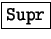

Next: Origen de las Curvas
Up: StarDraw: Creador de dibujos
Previous: Polígonos
Índice General
Aunque más adelante se explicará con detalle cómo modificar los
objetos, ahora se dan unas pautas para poder experimentar sin más
dilación:
- Se selecciona un objeto pulsando sobre él con la herramienta
de selección.
- Se mueve arrastrándolo.
- Se cambia su tamaño arrastrando los manejadores.
- Se cambia la línea que lo rodea y el relleno usando la
Barra de objetos de dibujo/Imagen:
- Los colores de línea y relleno se pueden elegir en la barra
de colores: con el botón izquierdo se elige el relleno y con el
izquierdo la línea.
- Se cambia su forma pulsando el botón Modificar puntos y
arrastrando los cuadrados que aparecerán en varios puntos. Véase el
ejemplo de la derecha.
- Se elimina pulsando .
Proyecto Cursos - LuCAS - http://lucas.hispalinux.es/htmls/cursos.html